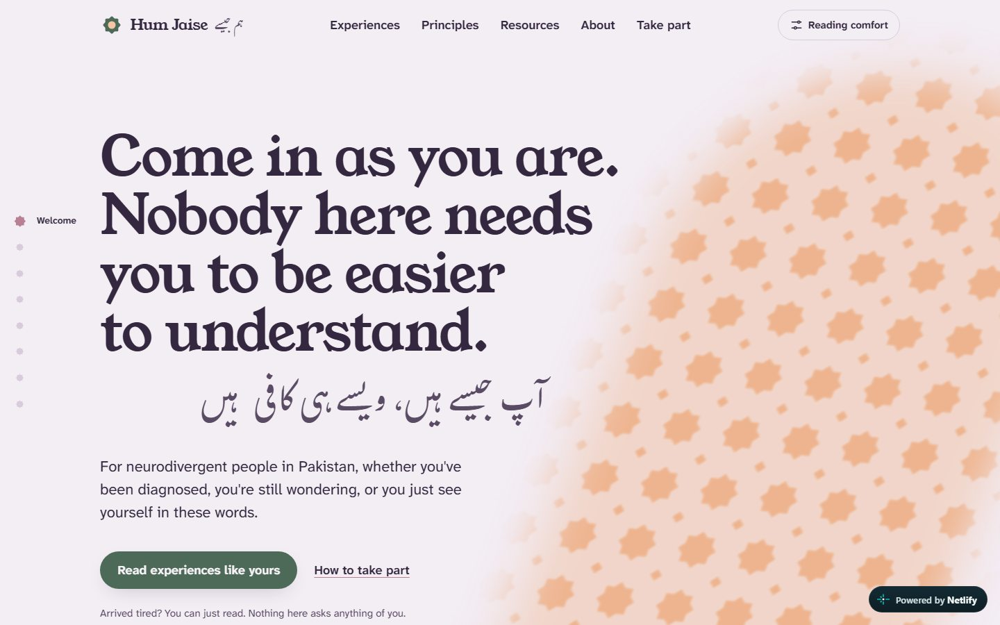
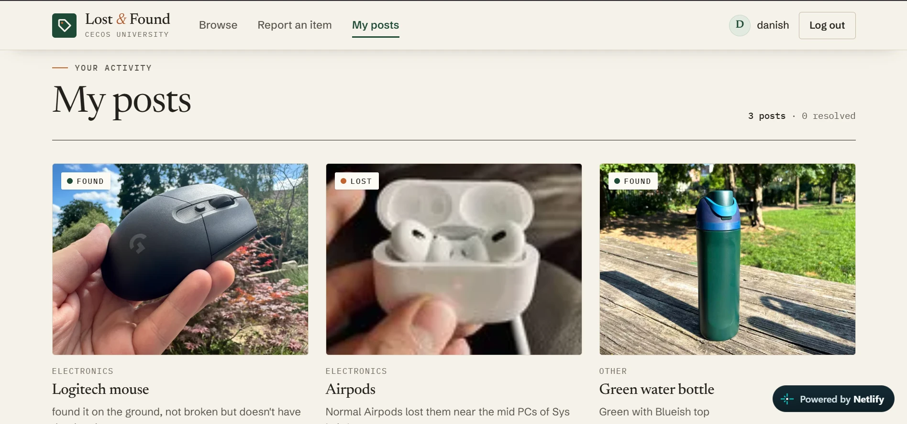

BS Computer Science
Graduating 2027CECOS University of Computing and Emerging Sciences, Peshawar. CGPA 3.62. Partial merit scholarship awarded on FSc results and the admission test.
I build websites and keep them working after launch: clear structure, content people actually read, and the basics that help search engines find it.
Computer Science student at CECOS University (CGPA 3.62, graduating 2027), looking for web management, web executive or junior digital roles.
Three live sites I planned, built and published myself. Each one opens in a new tab, with its source code on GitHub.
A launch and waitlist page for an imagined pair of gaming earbuds, built to the standard of a real product launch.
Planned the page structure, wrote the product copy and metadata, built the responsive layout and deployed it.
HTML, CSS, JavaScript. Hosted on Netlify, version-controlled on GitHub.

Open live siteA calm peer-support website for neurodivergent people in Pakistan, in English and Urdu.
Built the site and organised its experiences and resources as structured content files, so new entries can be added without editing layouts. Added a reading-comfort panel and security headers.
Astro, deployed on Netlify.

Open live appHelps students at CECOS University report lost items and return found ones.
Built the whole app: sign-in sessions, image uploads, search and filters, and a single-page front end.
Node.js, Express, JavaScript. Hosted on Netlify.
The day-to-day work of keeping a website useful, backed by the projects above.
Update pages, fix layout issues on mobile and desktop, and publish changes safely through Git, Netlify, Render or WordPress.
Write and edit clear page copy, and keep the tone consistent across the site and its social channels.
Page titles, meta descriptions, readable headings and semantic HTML on every page I build.
Currently learning Search Console, GA4 and keyword research.Experience moderating a Discord community and growing a personal X account past 1,000 followers.
Apps and databases from coursework and my own time. More on GitHub
A small convolutional neural network I designed and trained to recognise objects from a live camera or uploaded images.
Python, CNNCodeA mobile app for sorting tasks by priority, managing deadlines and tracking progress.
Flutter, DartCodeA cross-platform mobile app, built as the final project for Mobile Application Development.
Flutter, FirebaseCourseworkA relational database designed around the core operations of a pet clinic.
MS SQL ServerDatabase designBuilt and handed over websites for family, friends and a university society.
HTML, CSS, JavaScriptDeliveredEnglish (professional), Urdu and Pashto. Currently completing online courses in SEO and digital marketing.
CECOS University of Computing and Emerging Sciences, Peshawar. CGPA 3.62. Partial merit scholarship awarded on FSc results and the admission test.
Web Engineering, Natural Language Processing, Advanced Database Management, Information Security, Mobile Application Development.
Plan, shoot and publish the content.
Enforced guidelines and kept discussion constructive.
Grown through regular, engaging posts.
University events volunteer; ran a stall on my own to sell a friend's paintings.
I'm looking for a web management role, remote or in Peshawar. Email is the quickest way to reach me.
danishf725@gmail.com